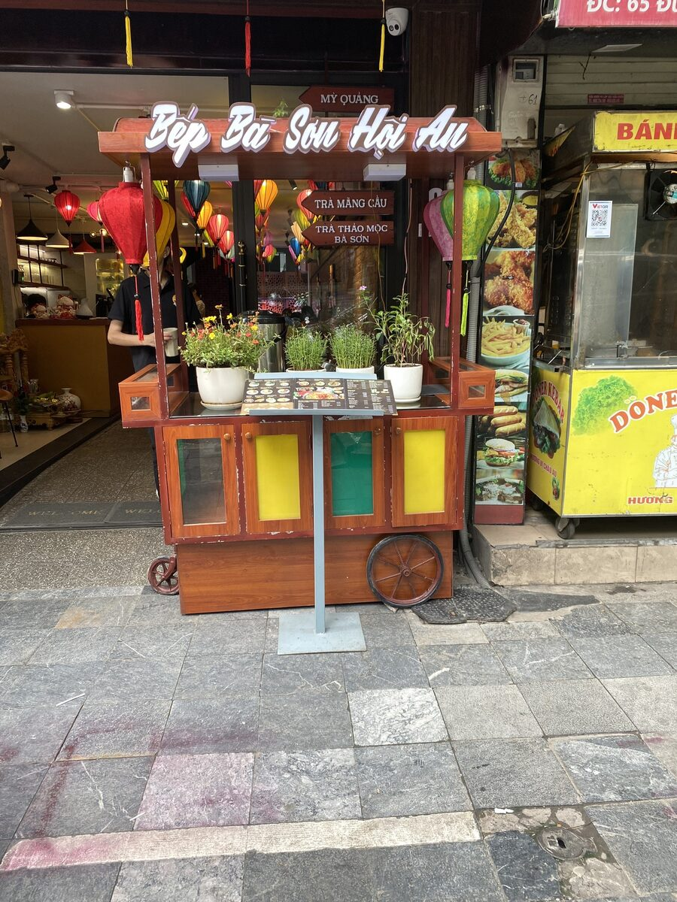
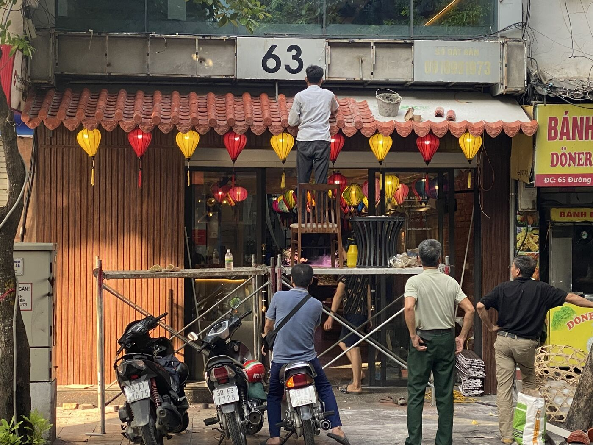

Hạng mục biển phù hợp cho nhà hàng
Mặt tiền có thể kết hợp chữ nổi phát sáng, logo hộp đèn, biển phụ món ăn, bảng menu và biển chỉ dẫn bên cửa.
Tổng thể nên ưu tiên ánh sáng ấm, vật liệu phù hợp phong cách quán và bố cục dễ đọc khi khách đi qua tuyến phố đông biển.
Vì sao kiểu biển này hợp quán ăn, cafe
Tên quán và logo nên đặt ở vùng cao, dễ nhìn từ xa; hệ đèn giúp biển nổi bật buổi tối nhưng vẫn giữ cảm giác ấm của không gian ăn uống.
Các biển phụ như menu, biển vẫy và bảng chỉ dẫn giúp khách nhận ra món chính trước khi bước vào quán.
Cách nhận tư vấn và báo giá
Biển nhà hàng nên có một điểm nhận diện chính thật rõ, sau đó mới thêm thông tin món, hotline hoặc bảng menu để tránh mặt tiền bị rối.
Gửi ảnh mặt tiền ban ngày, ảnh buổi tối nếu có, kích thước dự kiến, logo và phong cách nội thất qua Zalo 0989 521 881 để được tư vấn vật liệu hợp tông.
Thêm hình ảnh công trình



Câu hỏi thường gặp
Biển nhà hàng nên làm chữ nổi hay hộp đèn?
Nếu cần vừa sang vừa nổi bật buổi tối, chữ nổi có LED kết hợp logo hộp đèn là phương án rất phù hợp.
Có làm biển phụ và bảng menu ngoài cửa không?
Có. Có thể làm biển vẫy, bảng menu, biển chỉ dẫn món và các hạng mục trang trí đồng bộ với biển chính.
Muốn báo giá nhanh cần gửi gì?
Cần gửi ảnh mặt tiền, kích thước dự kiến, địa chỉ lắp đặt, logo hoặc mẫu thiết kế nếu có, và thời gian cần hoàn thành.